2026-10-27
VOL 392
读者，早。
资金端也有三种状态：Anthropic递交上市注册文件，Meta启动部分发行并规划后续售股，SpaceX取得设备租赁的约束性承诺。与此同时，便宜模型和独立量化仍在降低试验门槛。融资金额不会自动成为算力，文件变小也不会自动保住质量；每条消息都有自己的验收条件。

OpenAI在10月26日公布涉及局部光滑猜想、指数时间假说和量子场论的三项AI科研结果，并采用不同公开机制：数学材料直接开放，计算机科学结果由外部合作组解释、同时公开自然语言与Lean材料，物理结果则暂缓公开原始材料。公司称部分结果已完成Lean形式化；这不等于所有主张都已经获得独立学术认可，仍需检查形式化对象、前提和结果含义。
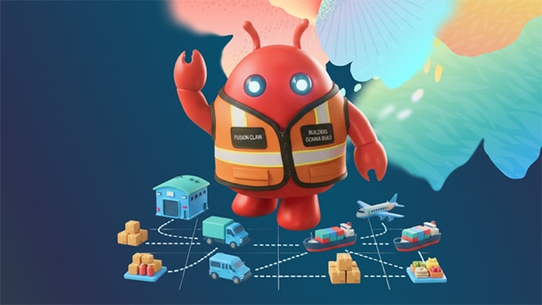
Oracle为Fusion供应链应用推出Claw运行时支持的智能体，覆盖稀缺材料与产能分配、运输装载计划及采购支出分析。系统可以比较方案、持续重规划，并在组织规定的权限与批准范围内推进执行；公告反复保留团队审阅和批准环节，没有给出独立验证的成本节省率或具体定价。
微软公布限时自愿离职方案，面向美国、加拿大、英国及印度部分参与团队、职级70及以下的合资格员工，提供财务支持与职业规划资源。各团队是否参与取决于业务需求；官方公告没有给出统一补偿金额、参与人数或实际离职人数，也没有把所有岗位变化归因于AI替代。
瑞典政府办公机构从10月26日起，阻止员工在工作电脑浏览器直接访问ChatGPT和Claude，转向已审核的Microsoft Copilot；部分员工仍可通过内部平台Intric使用相关模型。本条为当天生效后的新报道，措施此前在10月23日已经披露。限制针对公务电脑的访问渠道，不是瑞典全国禁用两家公司模型。
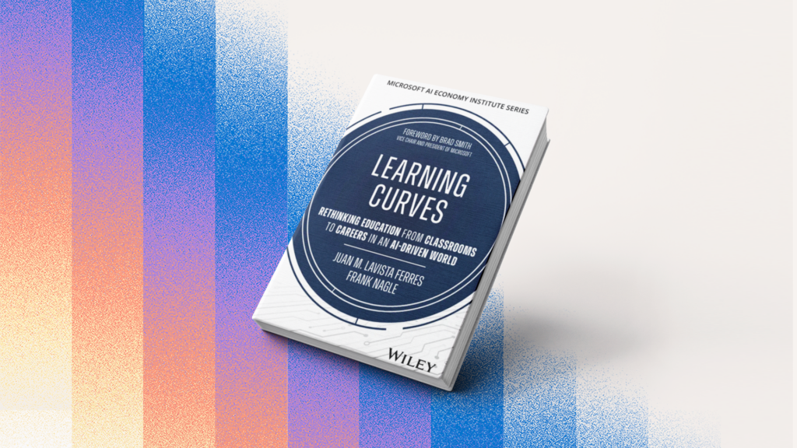
微软AI Economy Institute第二届高级研究员的新文集《Learning Curves》讨论从中小学、职业教育到初级岗位的AI转变。10月26日的介绍指出，不同地区面临的障碍并不一样：阿拉伯语课堂甚至可能先卡在数字读写和打字能力；教师培训、当地语言与组织准备也影响使用效果。这是研究观点与案例汇编，不是证明AI教学普遍有效的随机对照试验。

The Next Web在10月26日晚发布Terra的新报道；本条属于当天新报道、基础发布较早，不把原始RSS的窗口外零点时间改写成新发布。官方定价为每百万输入token 1美元、缓存输入0.05美元、输出5美元，比GPT-5.6 Terra及GPT-6.1 Sol标准单价低50%。OpenAI自报其在桌面操作和视觉任务上更高效；专业基准中的优势不能直接当作每个客户的完成率。
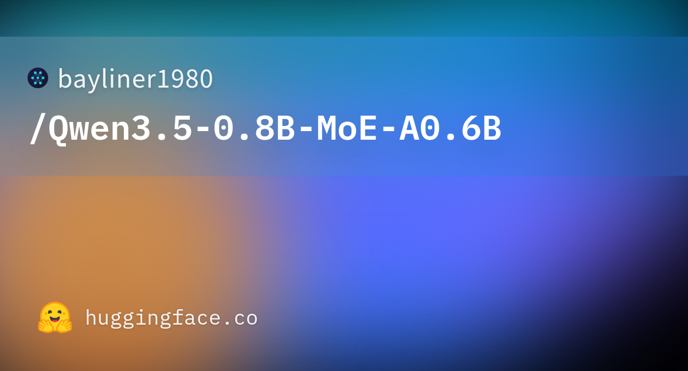
bayliner1980上传Qwen3.5-0.8B的独立MoE转换与蒸馏实验，并非Qwen官方新基础模型。窗口内提交说明，每层MLP拆成28个专家、每token选14个，MLP计算约减半，总参数基本不变；作者自报五项任务平均分由0.471降至0.428。它仅保留文本部分，思考模式与长上下文未经充分验证；本条固定核验23:48:24 UTC的提交，不采用窗口后的README修改。
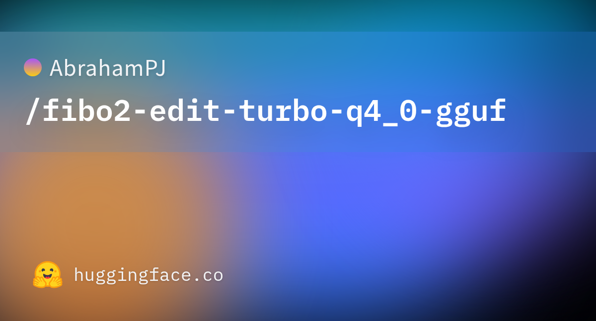
AbrahamPJ发布Bria Fibo 2.0 Edit Turbo的独立Q4_0 GGUF转换版，将已有量化文件里仍为BF16的部分矩阵进一步量化，文件从6.59GB缩至4.87GB，面向手机NPU上的图像编辑。作者只给出固定种子、512×512输入与四步生成的一组对照，不足以证明普遍保真；许可证为CC BY-NC 4.0，商业使用仍需另外取得Bria许可。
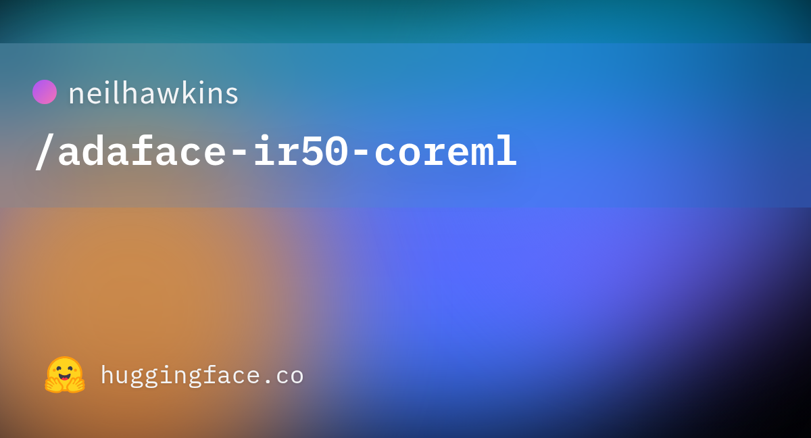
neilhawkins发布AdaFace IR-50的独立Core ML转换，源模型与训练研究来自2022年，并非新的人脸识别基础模型。16位编译文件面向macOS 15及以后版本，读取按五点模板对齐的112×112人脸，输出512维向量及质量相关范数。作者在单个测试输入上得到与PyTorch一致的余弦结果，但没有发布家庭老照片场景的独立准确率。
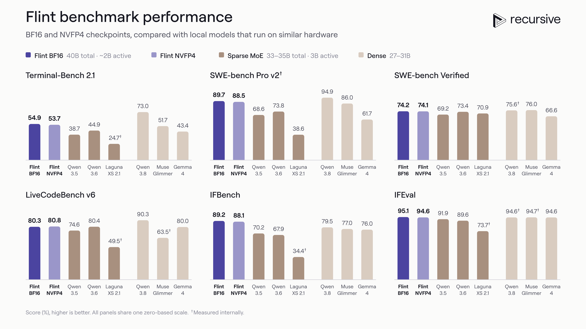
Transformers v5.21加入MiniCPM-OCR、Recursive Flint和UltraVBert等架构支持。MiniCPM-OCR面向文字密集图像；Flint结合滑动窗口与全注意力；UltraVBert使用页面分块及全局视图处理视觉文档。这里的新进展是框架集成，不能把同一份发布说明中的每个架构都写成当天新训练完成的模型，也不能仅凭集成就断言推理性能提高。
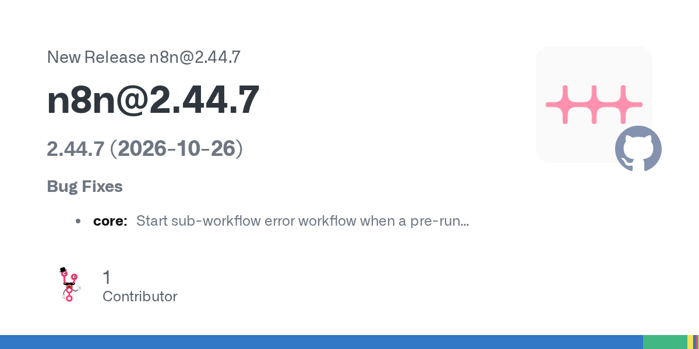
n8n稳定版2.44.7修复子工作流在执行前检查失败时没有触发错误工作流的问题，也为IMAP服务器反复断开连接加入重连退避，修正SharePoint字段映射的403与空项目错误。它属于可靠性维护版本；同时发布的beta及旧版补丁不另算独立新闻。
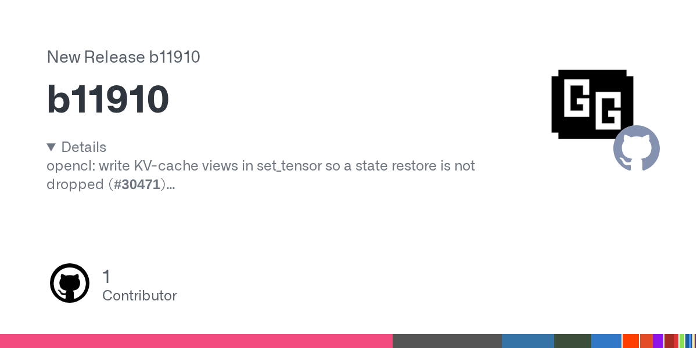
llama.cpp的b11910修复OpenCL后端在set_tensor中写入KV-cache视图的问题，避免恢复会话状态时缓存写入被丢弃。这是特定后端、特定状态恢复路径的修复，没有证据支持把它描述为全平台速度提升；同一天的其他构建不重复占栏。
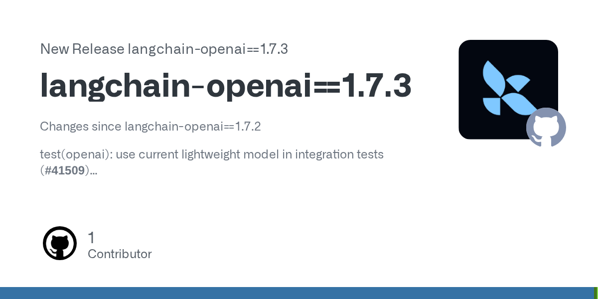
langchain-openai 1.7.3刷新OpenAI模型profile数据、调整集成测试模型，并维护aiohttp、certifi等依赖。发布记录还包含若干依赖修补和回退，因此本条仅确认资料与兼容性维护，不把它扩写成新的智能体能力或完整安全保证。
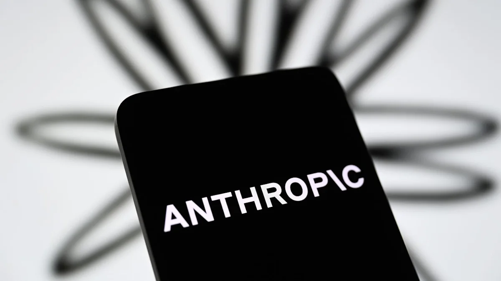
Anthropic于10月26日向SEC提交Class A普通股首次公开发行的S-1注册文件，计划以ANT为代码在Nasdaq Global Select Market上市。官方公告明确，发行股数与价格区间尚未确定，注册文件尚未生效；不能把市场对筹资额和估值的猜测写成已经完成的交易。
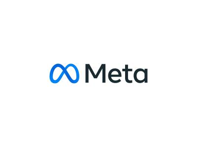
Meta宣布约350亿美元并行承销发行：225亿美元A类普通股远期销售，以及约125亿美元强制可转换优先股对应的存托股份；另计划在C类股开始交易后建立约600亿美元ATM售股项目。公司尚未为后者签署协议，规模和时间仍未确定；普通股远期销售也不会在初始发行时立即带来全部现金。
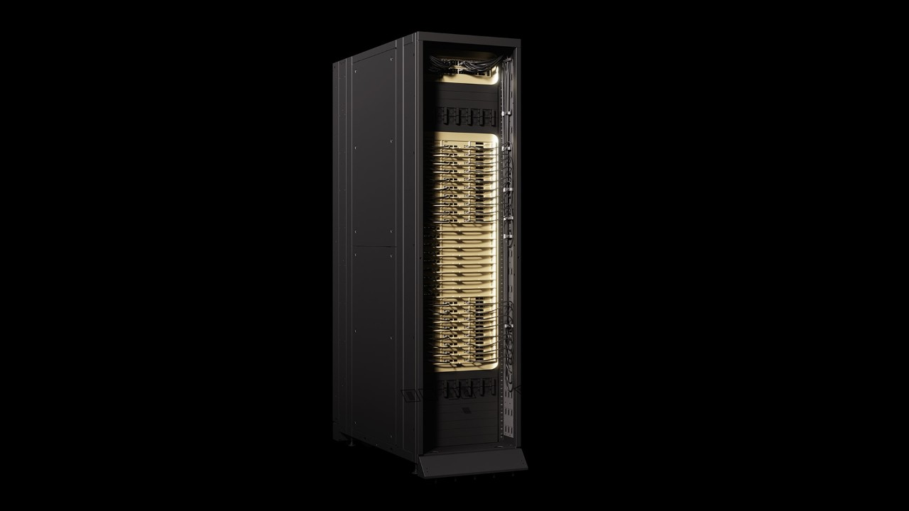
SpaceX公布与Apollo管理实体达成约400亿美元GPU及相关设备主融资租赁的约束性承诺，用于包括NVIDIA Vera Rubin在内的地面算力建设。这是昨天口头融资消息后的新交易细节：仍待交割条件满足，预计2026年底前完成，设备交付与租赁安排预计从2027年上半年启动；公司声称不到一年回本，尚非独立验证。
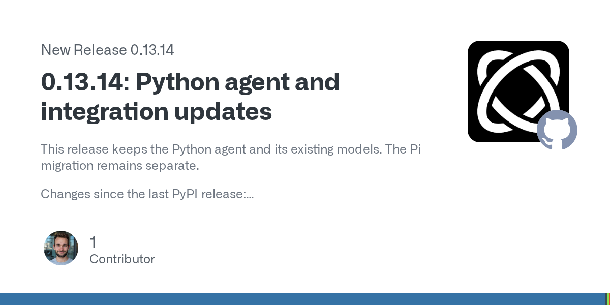
Browser Use 0.13.14增加OpenAI浏览器工具与共享Bash辅助功能，改进页面观察、表单状态、文件访问与浏览器恢复，并修正缩放显示器上的截图、裁剪和点击对齐问题。该版本仍保留Python运行时；项目明确，PyPI发布还需受保护流程的另一位审核者批准，不能把GitHub release直接写成软件包已经可下载。